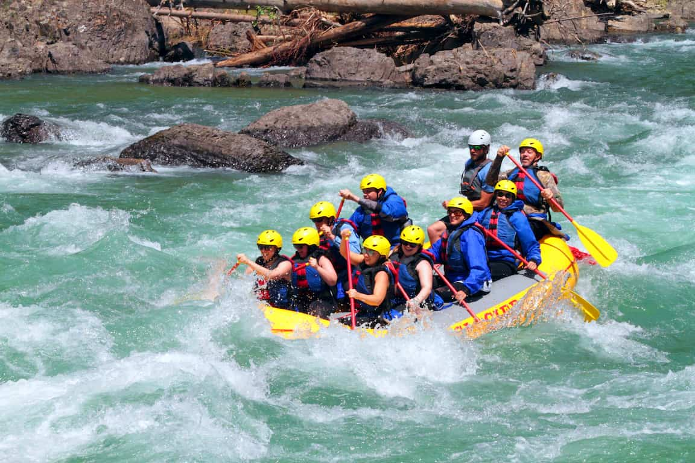
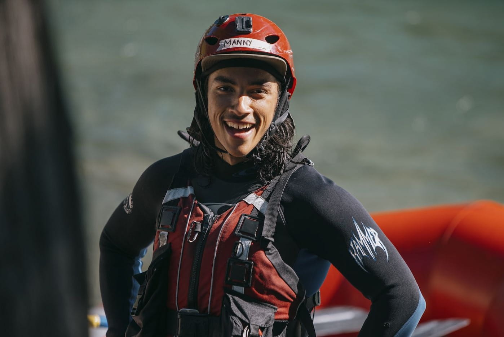
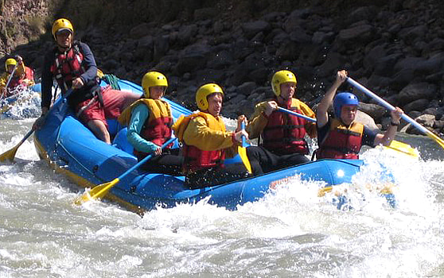
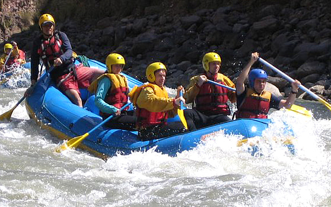
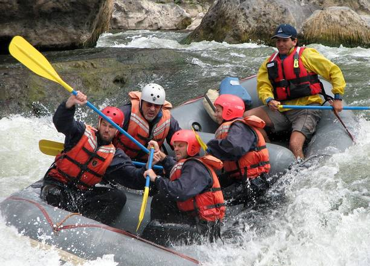
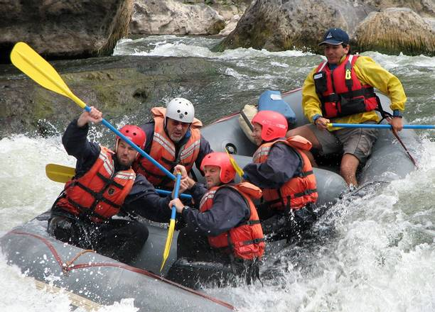

Dry Oaks was founded in 2014 by Alessandro Felix, an adventurer with years of experience navigating some of the most challenging rivers in Peru. From the rushing waters of the ApurÃmac to the wild rapids of the Marañón, Alessandro's passion for white water rafting led him to create a company that offers thrill-seekers the chance to conquer these legendary tracks. With a focus on safety and unforgettable experiences, Dry Oaks has become known for guiding people through Peru’s most exciting white water expeditions.


DRY OAKS: WHITE WATER RAFTING
History
At Dry Oaks, we’re all about sharing the thrill of white water rafting with anyone looking for adventure. Our mission is to create fun, unforgettable experiences on the river, always keeping safety as our top priority. We believe in connecting people to nature, building friendships, and making every ride something to remember. Our motto, “Ride the Rapids, Embrace the Wild,†isn’t just about rafting—it’s about living in the moment and making memories that last.
Adventure Awaits You!
 

 
